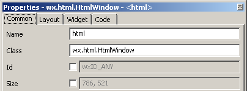
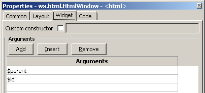
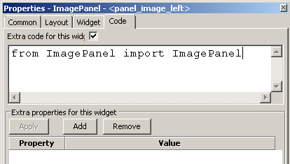
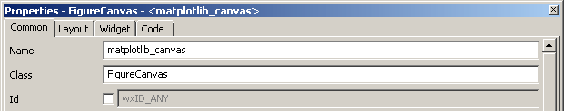
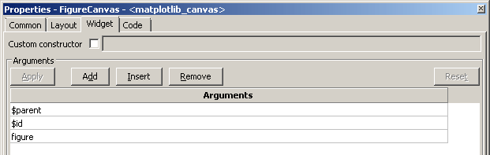
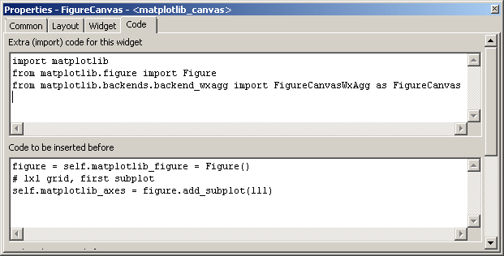
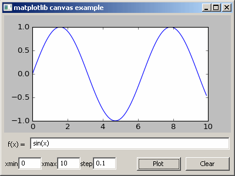

Custom Widget¶
Sometimes you may want to use a widget that is not supported by wxGlade.
For this, just insert a CustomWidget as placeholder.
You will be prompted for a class name. In the Design and Preview windows, just a placeholder will be shown.
E.g. the Properties window to integrate “wx.html.HtmlWindow” could look like this:
| Properties -> Common: Property “Instance Class” is the name of the class that will be instantiated. In this example: wx.html.HtmlWindow |
 |
| Properties -> Widget: The arguments for instantiation of the class. Usually you will at least enter $parent here. |
 |
| Properties -> Code: Enter the import statement here, if required. |
 |
The generated code for this example will look like this:
Import statement at the head of the file:
# begin wxGlade: extracode
import wx.html
# end wxGlade
Instantiation of the class:
self.html = wx.html.HtmlWindow(self.panel_1, wx.ID_ANY)
The Arguments $parent and $id were replaced with the required code. There are two more magic arguments: $width and $height.
- The files can be found in the folder
wxglade/examples/html:
Custom constructor¶
For most applications you would probably be more interested in using wx.html2.WebView as this will
display non-trivial HTML, JavaScript and CSS pages.
See wxglade/examples/html2 for an example application.
The html2.WebView class is a bit special as it is not to be instantiated directly.
Instead, wx.html2.WebView.New is to be called. In the .wxg file this is handled by setting
Properties -> Widget -> Custom constructor -> to wx.html2.WebView.New.
Example ‘matplotlib’: matplotlib canvas, quick and dirty¶
The above example was rather simple to implement as the class ImagePanel did not require any extra
arguments or code. It was just called with the parent window and the default ID as arguments.
Sometimes, the widget to be used needs some things to be set up before it can be created.
E.g. if you want to use the matplotlib FigureCanvas, this needs a Figure instance to be created and supplied as argument. To use it from within wxGlade, you may write a wrapper class around it or enter the required extra code in wxGlade.
This code creates a matplotlib canvas and plots a sine function:
import matplotlib
from matplotlib.figure import Figure
from matplotlib.backends.backend_wxagg import FigureCanvasWxAgg as FigureCanvas
# create the figure with a single plot and create a canvas with the figure
figure = self.matplotlib_figure = Figure()
self.matplotlib_axes = figure.add_subplot(111) # 1x1 grid, first subplot
self.matplotlib_canvas = FigureCanvas(self.panel_1, wx.ID_ANY, figure)
# draw a sine function
import numpy
x = numpy.arange(0,10,0.1)
y = numpy.sin(x)
self.matplotlib_axes.plot(x, y)
# show the plot
self.matplotlib_canvas.draw()
This example shows how to use the wxGlade CustomWidget to include a matplotlib canvas in your application:
| Properties -> Common: The class FigureCanvas will be instantiated. |
 |
| Properties -> Widget: The class will be instantiated with the arguments $parent, $id and figure. The argument figure is non-standard. It will be defined in Properties -> Code. |
 |
| Properties -> Code: The import statement will make the required classes and modules available on module level. Right before class instantiation, a Figure instance with a single subplot will be created. |
 |
| Result: The Python file has a very basic function plotter in it’s event handler for the “Plot” button. |
 |
- The files can be found in the folder
wxglade/examples/matplotlib:
To run the example, you need to have numpy and matplotlib installed, of course.
The above approach is OK for a quick & dirty prototype. The advantage is that all code is contained within wxGlade and therefore you may just copy it from one project or window to another.
Once things get more complex, it’s better to implement a custom class which does not require such extra code. The resulting code will be cleaner and also easier to maintain and extend.
Example ‘matplotlib2’: matplotlib canvas, well structured¶
This example has the same functionality, but shows how the code can be structured in a more readable and maintainable way.
matplotlib_canvas.py: a classMatplotlibCanvasas layer betweenMatplotlib.FigureCanvasmatplotlib_GUI.py: the GUI code, generated from wxGlade filematplotlib_GUI.wxgmatplotlib_example.py: the main file with the business logic
- The files can be found in the folder
wxglade/examples/matplotlib2:
Example ‘matplotlib3’: matplotlib canvas, comprehensive embedding example¶
This example shows most of the building blocks that you will need for integration of a Matplotlib canvas.
It shows how to plot and draw, zoom and drag, select items, export images and so on. It shows also how to draw graphics primitives like lines or circles on the whole canvas, i.e without plot axes.
This example is only for Python 3 and Matplotlib versions >=2.2.
matplotlib_canvas.py: a classMatplotlibCanvasas layer betweenMatplotlib.FigureCanvasmatplotlib_GUI.py: the GUI code, generated from wxGlade filematplotlib_GUI.wxgmatplotlib_example.py: the main file with the business logic
- The files can be found in the folder
wxglade/examples/matplotlib2:
More Examples¶
In subfolders of wxglade/examples/matplotlib2 there are more examples:
html2: usewx.html2.WebViewto display HTML with Javascript and CSS (not available on wxPython 2.8)lib_plot: usewx.lib.plot.PlotCanvasfor plottingSpeedMeter: demonstratewx.lib.agw.speedmeter.SpeedMeterpy_shell: show how to embed a Python shellwx.py.shell.Shell

{kind=link}
{kind=link}
{kind=link}
{kind=link}
{kind=link}
{kind=link}
{kind=link}